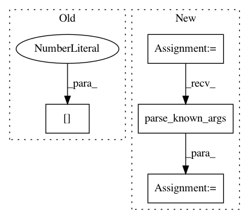

fdeeaff5e452e257bf3a3dd76e25c81304cc4c98,mmdnn/conversion/examples/tensorflow/vis_meta.py,,_main,#,14
Before Change
if len(sys.argv) != 3:
raise ValueError("Usage: python vis_meta.py /path/to/model.meta /path/to/log/directory")
// load file
visualize(sys.argv[1], sys.argv[2])
os.system("tensorboard --logdir=" + sys.argv[2])
After Change
kill PID
parser = _get_parser()
args, unknown_args = parser.parse_known_args()
if not os.path.isfile(args.ckpt):
print("The checkpoint meta file does not exist.")
exit(1)
In pattern: SUPERPATTERN
Frequency: 3
Non-data size: 4
Instances
Project Name: Microsoft/MMdnn
Commit Name: fdeeaff5e452e257bf3a3dd76e25c81304cc4c98
Time: 2020-03-15
Author: linmajia@users.noreply.github.com
File Name: mmdnn/conversion/examples/tensorflow/vis_meta.py
Class Name:
Method Name: _main
Project Name: vatlab/SoS
Commit Name: e0168c1674a2d9722e57bcb1249ede56742c65d1
Time: 2016-11-29
Author: ben.bog@gmail.com
File Name: sos/__main__.py
Class Name:
Method Name: sosrun
Project Name: stanfordnlp/stanza
Commit Name: f25d9afd2572b98c56c3f597ad8da2648cd7b663
Time: 2020-12-01
Author: horatio@gmail.com
File Name: stanza/utils/training/common.py
Class Name:
Method Name: main